Nama: nazwakholifah
NIM3: 138
Database: db_uts_mbd Skema: salam
Port host: PostgreSQL 22138 pgAdmin 44138
| Pemeriksaan | Hasil |
|---|---|
| Docker Compose | PostgreSQL dan pgAdmin berjalan; PostgreSQL berstatus healthy. |
| Akses database | Terhubung dari pgAdmin melalui jaringan Docker dan dari DBeaver melalui localhost:22138. |
| Skema dan data | Skema salam, tabel mahasiswas, constraint, trigger audit, dan view tersedia; 5 data awal tersisa. |
| Bukti constraint | INSERT valid berhasil; 8 pelanggaran constraint menghasilkan error yang diharapkan. |
| Bukti hak akses | backend_dev CRUD tanpa DDL; bi_dev hanya SELECT; data_engineer pemilik skema dan objek. |
| Transaksi pembeda | COMMIT, ROLLBACK, SAVEPOINT, trigger audit, dan view ringkasan berhasil diuji. |
Password pada bukti konfigurasi disamarkan. Port PostgreSQL yang dipublikasikan adalah 22138 dan port pgAdmin adalah 44138.
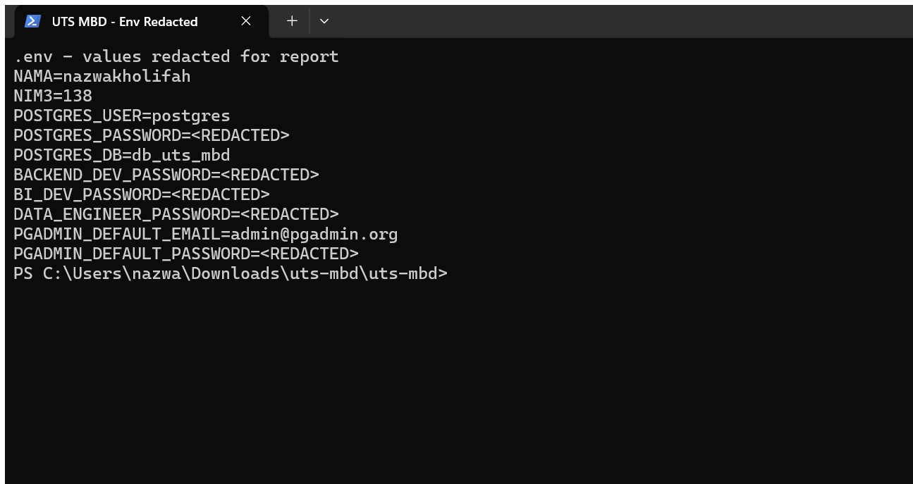
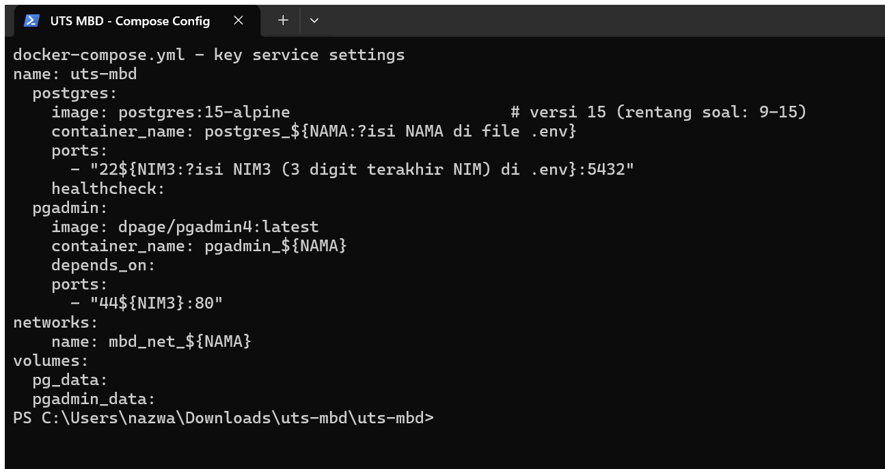
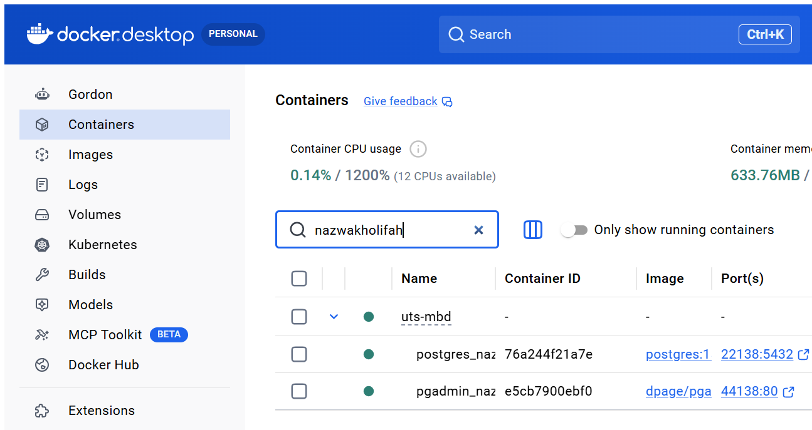
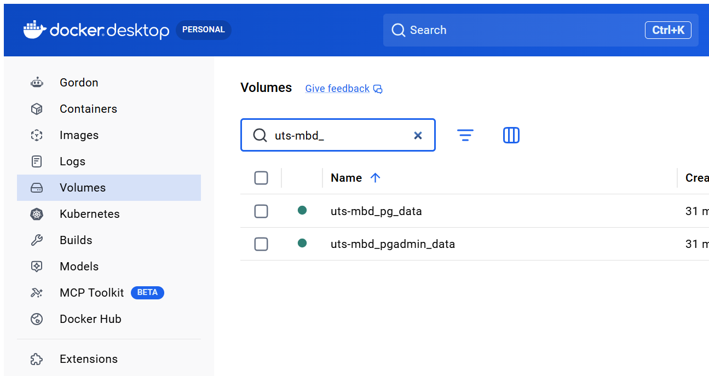
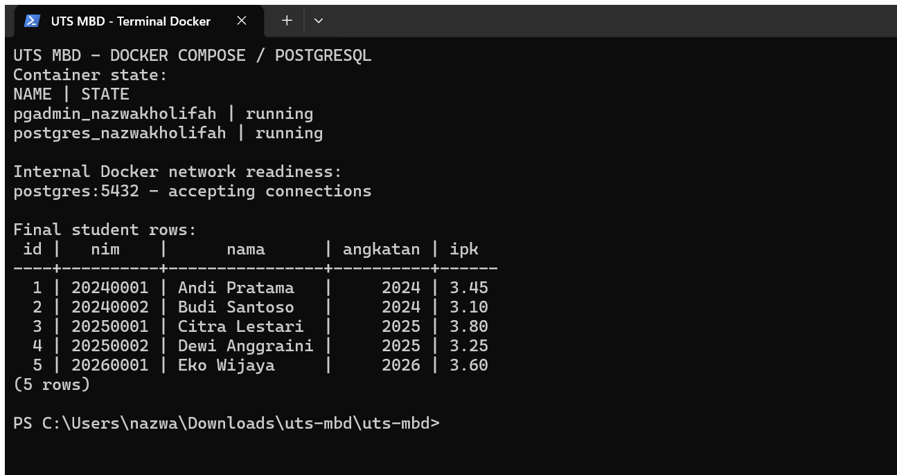
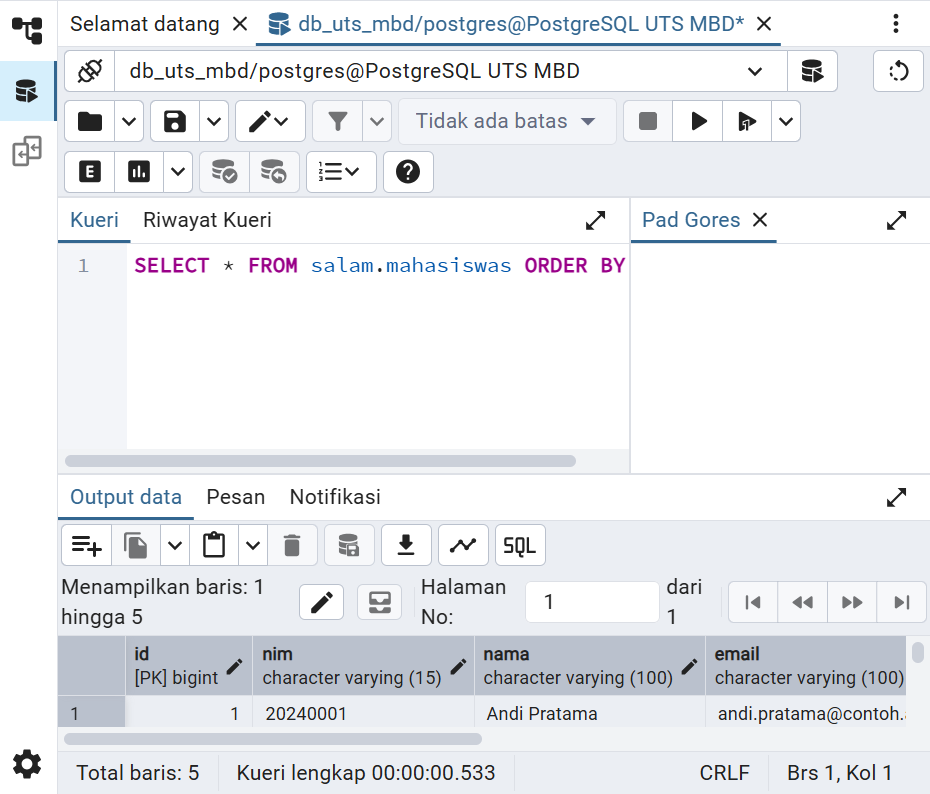
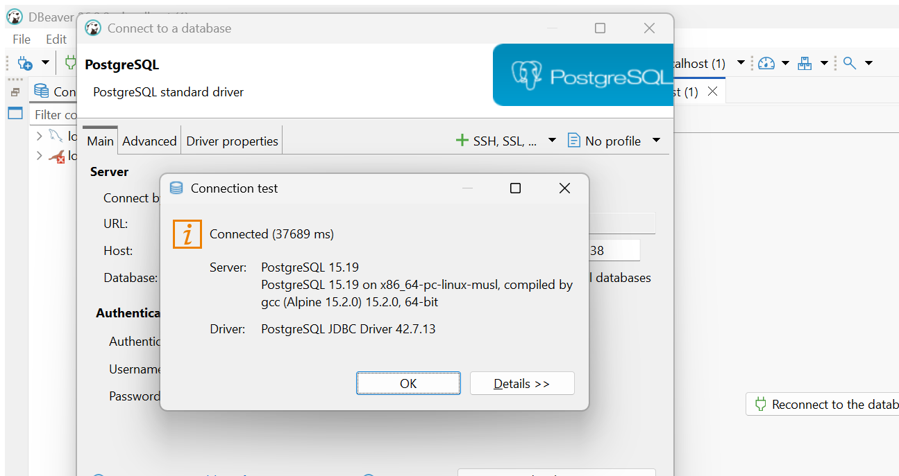
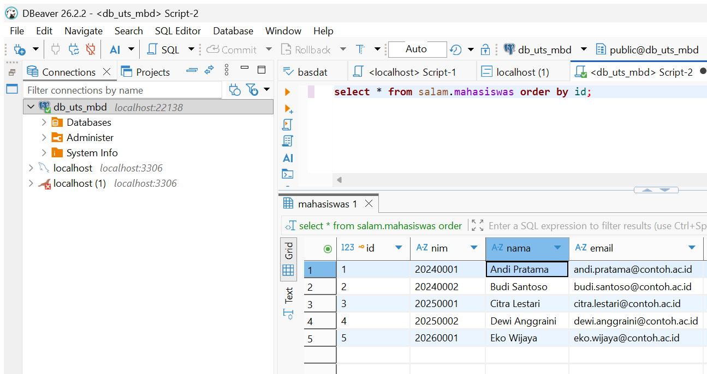
File keluaran lengkap: constraint-output.txt dan roles-output.txt.
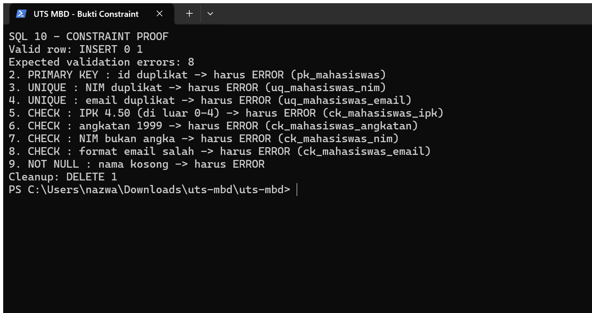
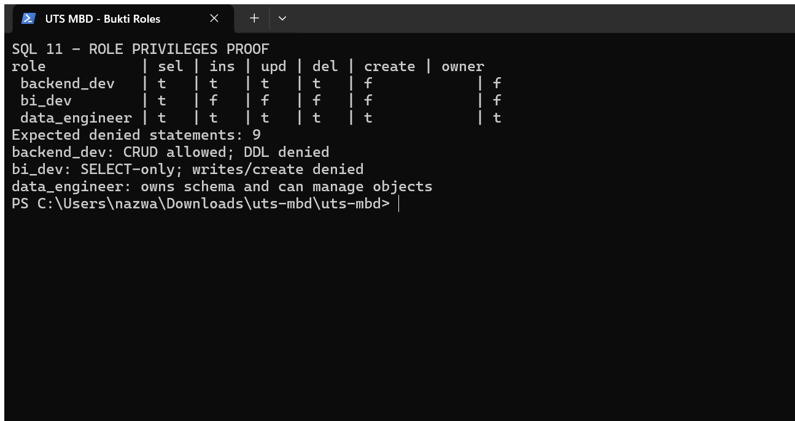
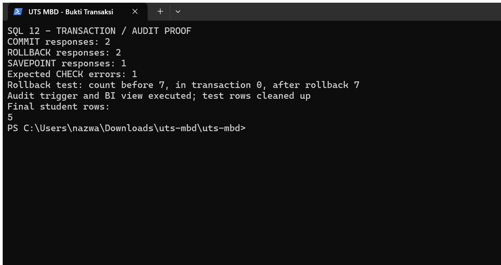
Keluaran mentah seluruh skrip tersedia di constraint-output.txt, roles-output.txt, dan transaksi-output.txt.
.env tidak dimasukkan ke bukti atau publikasi.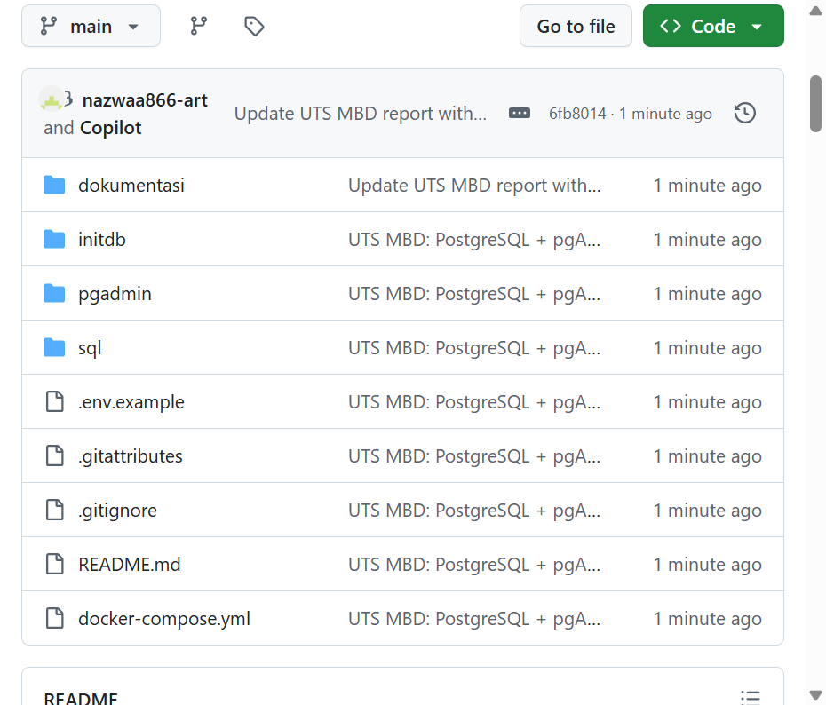
main; .env tidak dipublikasikan.URL: https://github.com/nazwaa866-art/UTS-Managemen-Basdat